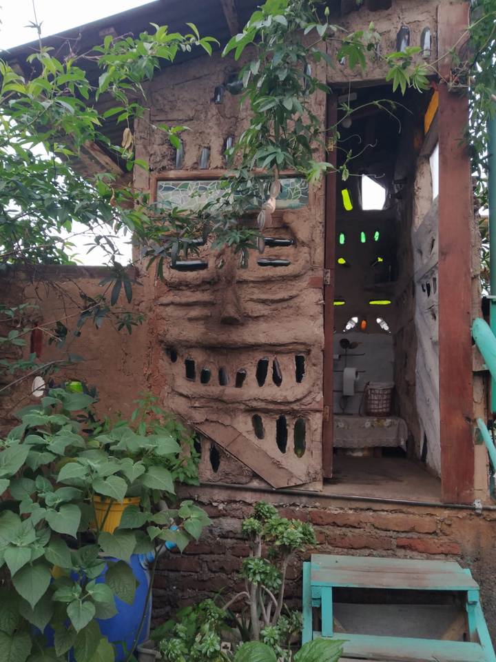
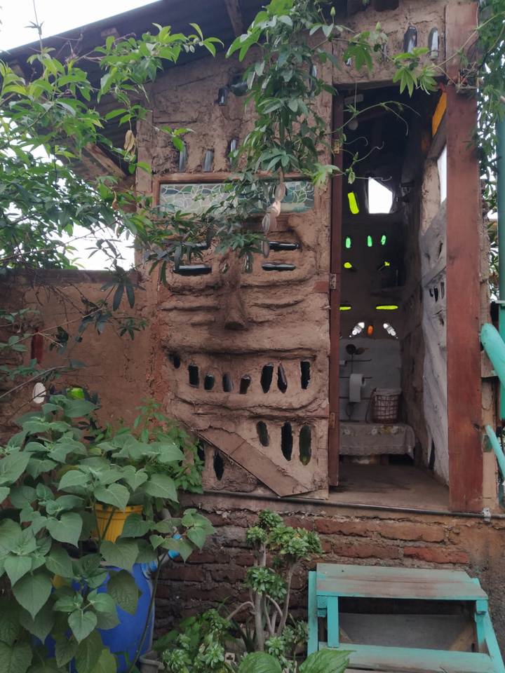
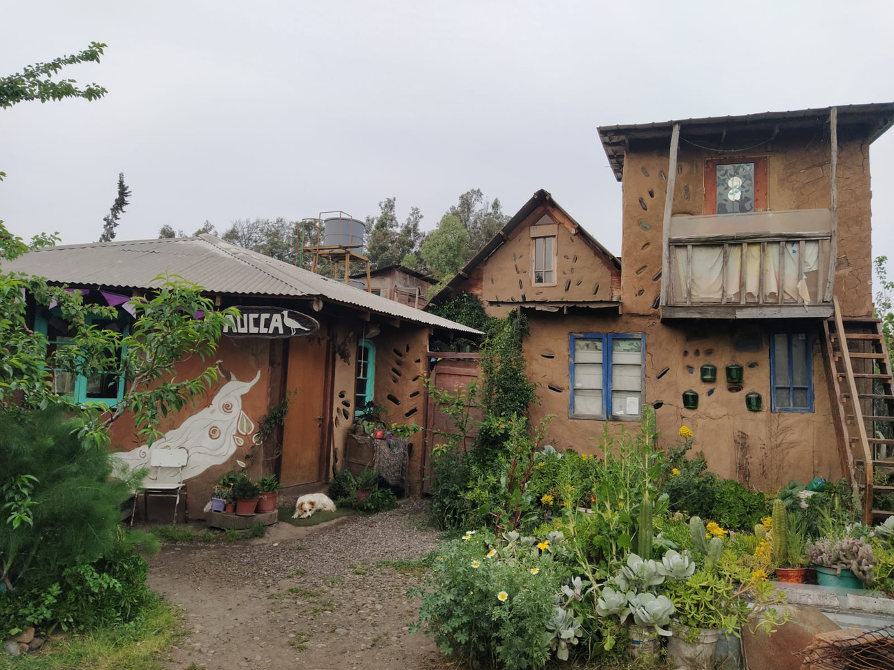
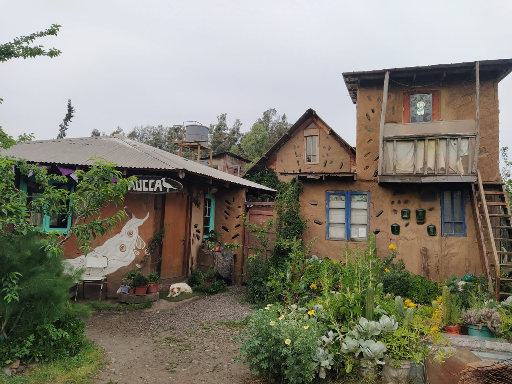
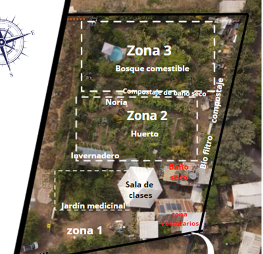
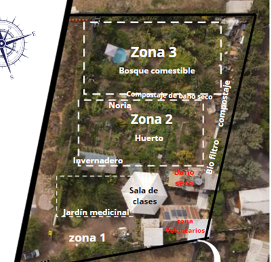

¿Qué es AUCCA?
AUCCA es un Centro Eco-Pedagógico fundado en 2013 en Talagante, Chile. Su misión es difundir prácticas medioambientales regenerativas y fomentar el intercambio de saberes basados en los principios del Buen Vivir. Es una organización sin fines de lucro enfocada en la agroecología, la educación ambiental y la cultura comunitaria.
Misión
Promover la educación ambiental, la soberanía alimentaria y el fortalecimiento de comunidades a través de prácticas regenerativas y experiencias eco-pedagógicas.
Áreas temáticas
AUCCA trabaja en tres pilares:
üå± Agroecolog√≠a y Permacultura: Producci√≥n de semillas, hierbas medicinales y hortalizas.
üåé Educaci√≥n Ambiental: Talleres accesibles con colegios y comunidades.
üé® Arte y Cultura: Encuentros de cester√≠a, alfarer√≠a y danza como herramientas de autogesti√≥n.
Proyectos destacados
üå≥ Bosque Comestible (2024): Creaci√≥n de un ecosistema agroforestal sustentable.
ü•ï Sembremos Salud Comunitaria (2023): Alimentaci√≥n sostenible y producci√≥n agroecol√≥gica.
Prácticas y Sistemas
üöΩ Ba√±o seco ecol√≥gico
El baño seco compostero procesa desechos sin usar agua. Usa aserrín o ceniza como cobertura para absorber humedad y evitar olores. Los residuos se transforman en compost en 6–12 meses, usado luego para mejorar suelos degradados.
üíß Biofiltro de aguas grises
El biofiltro trata naturalmente las aguas del lavado y la ducha mediante decantación, arena, grava y plantas acuáticas. El agua tratada se reutiliza para el riego, reduciendo el consumo de agua potable y educando en el manejo sostenible del recurso hídrico.
üåø Compostaje y lombricultura
El compostaje transforma restos orgánicos en abono natural. AUCCA utiliza métodos aeróbicos y lombricultura, reduciendo residuos, fertilizando la huerta y cerrando el ciclo de nutrientes.
ü§ù Voluntariado
El programa de voluntariado permite a personas de todas las edades colaborar en la huerta, la bioconstrucción y talleres educativos, fortaleciendo la comunidad a través del aprendizaje compartido.
Galería
 



 

 
